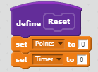
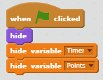

Anime Clicker is a challenging game that consists of clicking also created by Nate Trichanhle and myself. For every click on the icon you will get points for it, but here's where the randomness occurs for every click you'll recieve from 7-10 points. The game gets harder by going onto the next level, you get more time but the number of clicks are challenging to accomplish. The game ends when you win all the levels, and you lose when you cant't achieve the number of points asked for, and the points and time resets.
 The inspiration behind Anime Clicker is Cookie Clicker. a very addicting tapping game on mobile devices. Two successful points in our game was our point system and reset system. Two obstacles in our game was the time resetting it would not go 15 all the time, and as well as our "more block" reset button it wouldn't reset to the home page. If I had more time I would try to make the game more smoother and more appealing to the eye. An algorithm that contributes significantly to the game is our home page when the flag is clicked the points and timer is hidden until "play" icon is clicked, it shows.
Alexander-Snatch is based on this man named Alexander who is craving ice cream, so he decides to head over to a nearby diner and get some ice cream. While getting ice cream at the diner he is encountered by a person who will either then be the love of his life or someone asking for aid.
One incremental process of this program is the constant adding of new ideas, such as the addition of a homeless man when it could've been another woman instead. One iterative process would be in the creation of the story, I had to use multiple squares and diamond shape boxes in order to find out what would be the commentary and what would be the choices. The difficulties we had while creating the program was actually while we were creating it, an error popped up saying "unexpected indent" and we had to start from that line and backspace the tab for every line after that and it would always occur over again after awhile. Organizing scenes of my story is a form of procedural abstraction because it sets the foundation of what we want or need in the story and as well when we move forward it'll be easier for us to know what will occur first. The advantages of procedural abstraction in our functions is that it is already in mind and when we begin the funcion all we would have to do is add in our ideas and go on from there. One story I really liked was by Alex Ha amd Brooke Tran, and it was really entertaining deciding whether we would be able to save a child's life or not.